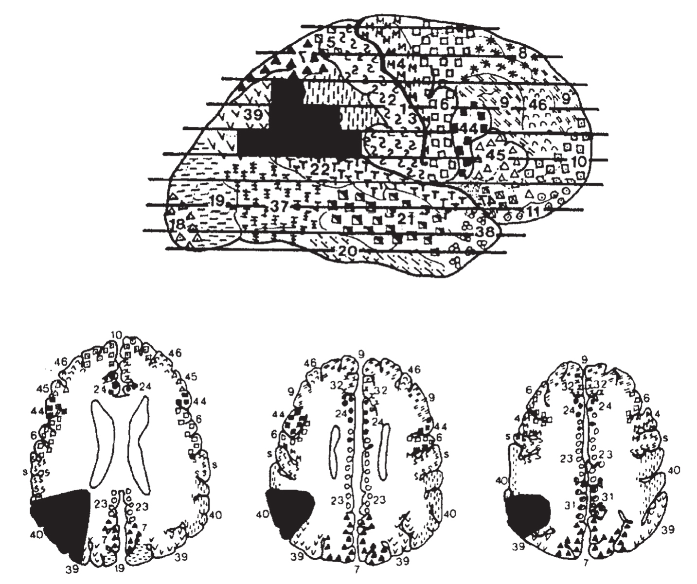

之前对一些裂脑患者，包括对J.S.的研究共同表明，尽管只有大脑左半球能完成精确计算任务，但对数量进行表征是由大脑左右半球共同完成的。数量表征过程中所涉及的脑区能被定位吗？心理数轴是否与位于精确皮层位置的特定脑回路相关呢？如果脑损伤使我们失去数感的话，我们的精神生活会是什么样的？为了回答这些问题，我转而研究轻度脑损伤患者，这些损伤影响了更为具体的大脑回路。
法国著名剧作家欧仁·尤内斯库（Eugène Ionesco）在撰写他的杰作《课堂》（The Lesson）时，除了对幽默和废话的热爱之外，可能并没有其他抱负。然而巧合的是，在这个剧本中，他对一个没有数量直觉的失算症患者进行了非常逼真的描绘：
教授：现在让我们来做会儿算术……1加1是多少？
学生：1加1等于2。
教授（惊讶于学生的知识）：哦，非常好。在我看来你在学习方面很拿手。女士，你应该很容易就能读到博士……我们继续，2加1等于几？
学生：3。
教授：3加1呢？
学生：4。
教授：4加1呢？
学生：5。
教授：棒，非常棒，非常巧妙！祝贺你，女士。没必要再继续了，在加法方面你是个高手。现在让我们试试减法。如果你不是特别累的话，请告诉我4减3是多少？
学生：4减3……4减3？
教授：是的。我的意思是说，从4中减去3。
学生：等于……7?
教授：很抱歉我不得不反驳你。4减3不是等于7。你弄混了，4加3等于7，4减3不等于7……这不是加法，我们现在是在做减法。
学生（试着理解）：是的……是的。
教授：4减3等于……多少？……多少？……
学生：4？
教授：不是，女士，不是4。
学生：那么是3。
教授：也不是，女士……请原谅，很抱歉……我应该说，不是3……对不起。
学生：4减3……4减3……4减3？……是不是等于10啊？……
教授：如果可以的话，请你数一下。
学生：1……2，2之后是3……然后是4……
教授：现在停下，女士。哪个数字更大？3还是4？
学生：嗯……3或4？哪个更大？3还是4更大？哪种意义上的更大？
教授：一些数字较小，其他的较大。大数字比小数字多几个单位……
学生：抱歉打断一下，教授……较大的数字是什么意思？是指不像其他数字一样小的数字吗？
教授：没错，女士，很好。你已经很好地理解了我的意思。
学生：那么，是4。
教授：4怎么了？比3更大还是更小？
学生：更小……不，更大。
教授：正确。3和4之间差几个单位？或者说4和3之间，你怎么看都行。
学生：4和3之间没有差任何单位，教授，4之后立即就是3；3和4之间没有任何东西！
教授：看这儿。有3根火柴，再加1根就变成了4根。现在仔细看，我们有4根火柴，我拿走1根，现在剩下的是几根？
难道尤内斯库曾参观过神经内科门诊？《课堂》中的学生不是一个虚构的人物，她与我在现实生活中见过的一个人类似。M先生是一位68岁的后顶叶皮层损伤的失算症患者（见图7-2），我曾花了几个小时向他讲授算术8。像尤内斯库笔下的学生一样，M先生能解决简单的加法，但完全不能理解减法，并在判断两个数字中哪个较大时感到困难。尤内斯库笔下的对话听起来如此真实，几乎是对我与M先生的超现实对话的逐字转录。在教授的言语中，我仿佛看到自己笨拙地试图向M先生讲授初级算术：当他成功时我给出夸张的鼓励，当他失败时我难掩气馁。在学生的言语中，我几乎能感受到M先生以不懈的努力试图回答他已经无法理解的问题时的迷惑。甚至该剧的副标题——滑稽剧，也暗合了M先生的不幸遭遇，一个数感缺失的真实案例。

右侧后顶叶皮层的损伤导致M先生失去了数感（注意：按照神经学惯例，大脑右半球的病变被标记在水平切面图的左侧）。
图7-2 失去数感的M先生的脑图
资料来源：Dehaene & Cohen, 1997。
事实上，M先生的障碍在一些患者中非常典型。在数量表征和在心理数轴上赋予阿拉伯数字和数词意义方面，他们有选择性缺失的问题。M先生实质上已经失去了所有算术直觉。这就是为什么他不会计算“4-3”，甚至不能理解减法的意义。然而，由于他的大脑其他区域的皮层完好无损，因此在不理解意义的情况下，他仍然能完成程序化的符号计算。
让我们逐个讨论M先生的能力。M先生讲话非常流利，能准确地读出词汇和数字。他起初在书写上有些困难，但这个问题已经消失很长时间了。他的词汇识别模块，不管是视觉的还是听觉的，口头的还是书面的，都一定是完好无损的，因为这些模块是连接上述能力的通道。顺便提一下，M先生的案例清楚表明，人类大脑中存在将数字从一种符号转换成另一种符号的直接路径——这些神经网络可以在忽略符号意义的情况下将2转化成“二”。
的确，M先生不能理解他读出的数字。在需要指出两个阿拉伯数字中哪个较大的任务中，每6次实验他会失败一次。尽管他的错误相对比较少，却显而易见。例如，他曾毫不犹豫地坚持认为5比6大。在近似数字的测试中，判断两个数字哪个更接近第三个数字，他也会在每5次实验中失败一次。
他的障碍在减法和数字等分测验中最为明显。数字等分测试是判断哪个数正好落在给定间隔的中间。在这一测试中，M先生的反应简直是荒谬。在3和5之间，他放置了3，然后是2；在10和20之间，他放置了30，然后又改为25，并道歉说：“我不能很好地想象数字。”
类似的混淆在减法中也频频出现。每4个问题中有3个他都不能正确地解答。实际上，他的错误与尤内斯库所描绘的学生存在着神奇的相似之处。他坚信“2-1=2”“9-8=7”，“因为有1个单位”，他会说“3-1”的结果是4，“不对，这里有1个单位，改变1个单位等于3，对吗？”对于“6-3”，他给出的答案是9，但在极为罕见的清醒状态下，他会自我解释：“应该做减法的时候我却在做加法。减法意味着拿走，加法意味着加起来。”然而这不过是一个理论上的虚饰。M先生对整数的结构，以及从一个数量移动到另一个数量需要进行什么操作完全没有概念。
在《课堂》里，不能从4中减去3的学生突然变成了一个计算奇才：
教授：例如，三十七亿五千五百九十九万八千二百五十一乘以五十一亿六千二百三十万三千五百零八等于多少？
学生（非常快地）：等于一亿九千三百九十二万八千四百二十二亿一千九百一十六万四千五百零八……
教授（惊讶）：如果你不知道运算法则，那么你是怎么得到这个结果的？
学生：很简单。不用依靠我的推理，我已经记住了所有可能的乘法结果。
总而言之，M先生也表现出了相似的分离，尽管不太明显。坚信“3-2=2”的M先生记得乘法表的大部分内容。他的机械言语记忆是完整的，这使他能够在不明白自己说的是什么的情况下，像机器人一样不假思索地说出“3×9=27”。呈现给他的一位数加法问题中，有一半以上是他利用这种未损坏的记忆解决的。但是，每当加法运算的结果超过10时，他就会失败。多数成人会使用一种分解策略来解决这类问题，如把“8+5”分解为“（8+2）+3”，这显然超出了M先生可以理解的范围。他的算术知识似乎缩小到了他的机械记忆的范围内。在记忆失败的情况下，后顶叶皮层的损伤使他无法求助于数感。